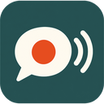

Record Google Meet and web calls in Chrome, on your own computer
Call Recorder for Google Meet is a free, open source Chrome extension. It saves the call, your microphone and the sound of any screen or tab you share to one file on your own computer. No server, no account, nothing uploaded.
What you get
- The whole call in one file. Other people's voices and video, your microphone and shared screen sound, as MP4 or WebM.
- A clear voice. Noise reduction runs on your computer, with a safety net that never lets it swallow your voice.
- Private by design. No cloud, no sign-up, no analytics. Recording starts only when you press Start.
- Light on your computer. The file is written to disk as it records, so long meetings do not fill your memory.
- Works on Google Meet, Konvene and other calls in a Chrome tab.
Questions
Can I record a Google Meet call? Yes. Open the call tab, click the extension, confirm you told everyone, and press Start. The sound of a screen or tab you share in Meet is recorded too.
Is it free? Yes. It is open source under AGPL-3.0.
Is it legal? Many places need everyone's consent to record a call. The extension asks you to confirm, and shows a recording badge on Konvene. The responsibility is yours.